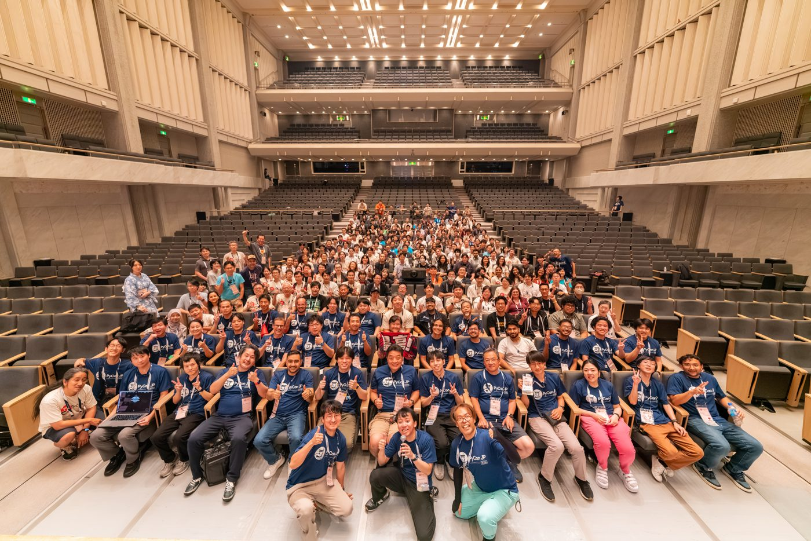
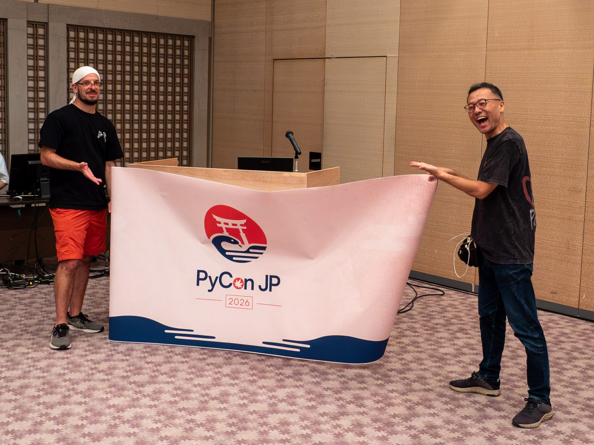
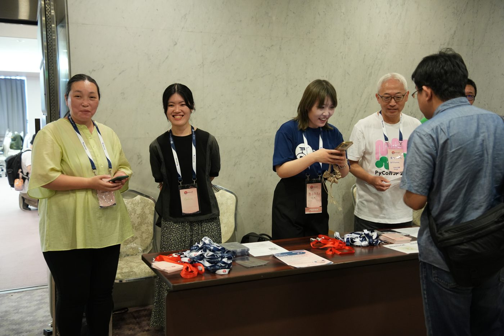
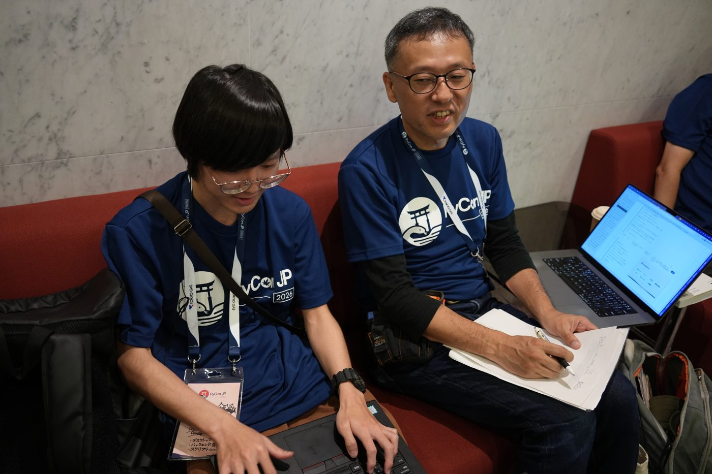
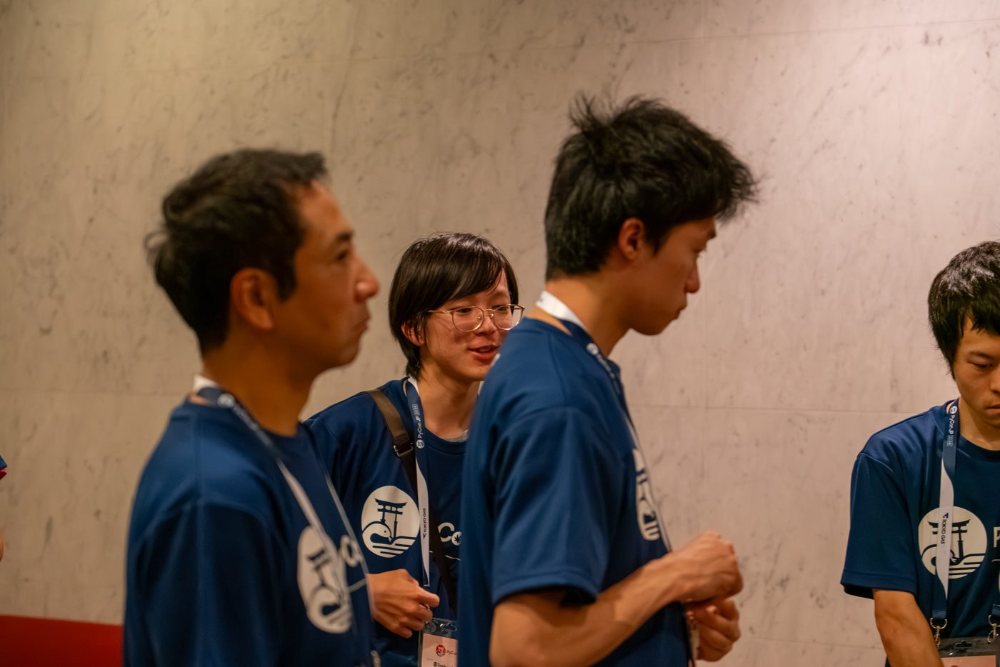

JOIN US
主催メンバー募集
PyCon JP 2027 をいっしょにつくる仲間を募集します
PyCon JP 2026 HIROSHIMA

みんなで

会場の設営

受付の準備

準備作業

当日の運営
01募集区分
サポートスタッフできる範囲で
タスクと時間帯を選んで
02チーム
企画トーク・企画
会場会場づくり
参加者チケット・受付
協賛スポンサー
広報Web・SNS
かけもち開発Web・アプリ
かけもちデザインロゴ・掲示物
かけもち地域連携静岡とつなぐ
メインを1つ選択かけもちは任意チームは申し込み後に決定
03参加の流れ
STEP 1フォームで申し込み
STEP 2Slackに招待
STEP 3オンボーディング
04参加にあたって
無償ボランティア
日本語で日常会話
行動規範に同意
連絡はSlack
交通・宿泊は自己負担の場合あり